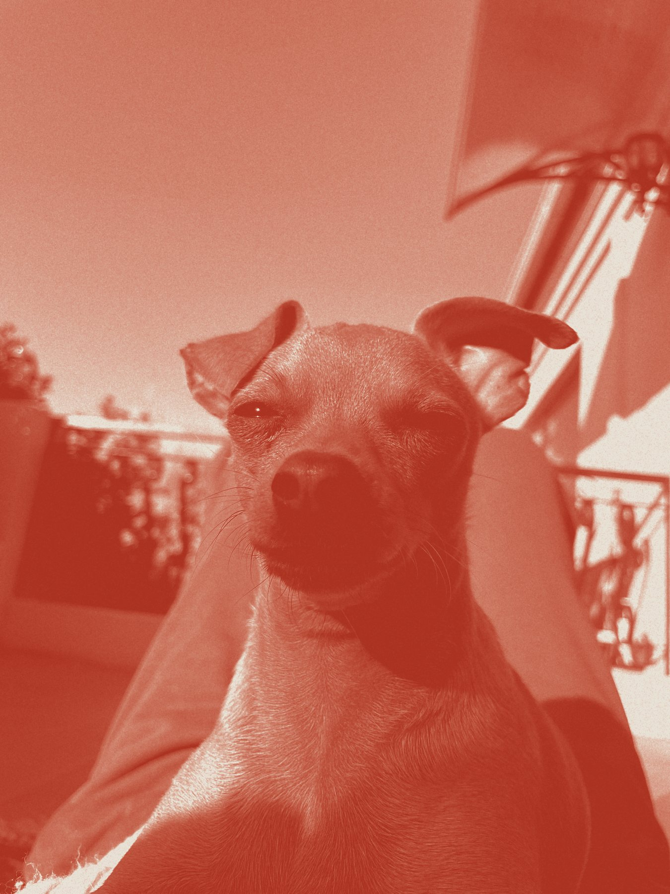

Things I love

1Piano, 2Running, 3Strength training, 4Yoga, 5Crafts, 6Photography, 7Building random things with AI, 8Creating AI portraits of my friends, 9Practicing mindfulness, 10My family, friends, and dogs, 11Learning new things, 12Spending time outdoors, 13Hiking, 14Floating in calm bodies of water, 15Architecture & interior design, 16Fashion, 17Rock climbing, 18Pranks, 19Crossword puzzles, 20Board games (especially trivia ones), 21Baking, 22History, 23Water parks, 24Being described, 25Handwritten cards/notes, 26Interpretive dance (watching, not doing), 27Tuvan throat singing, 28Karaoke, 29Blind karaoke, 30Anything vintage.